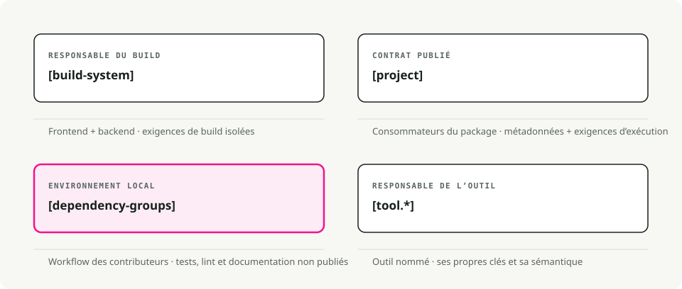
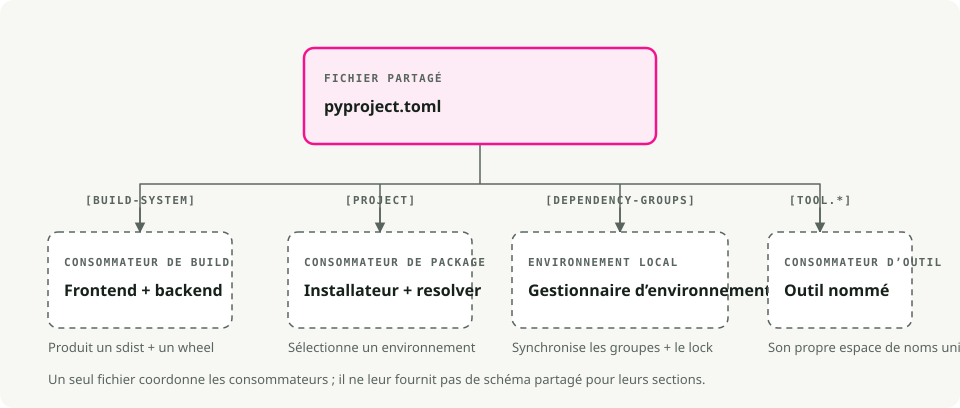
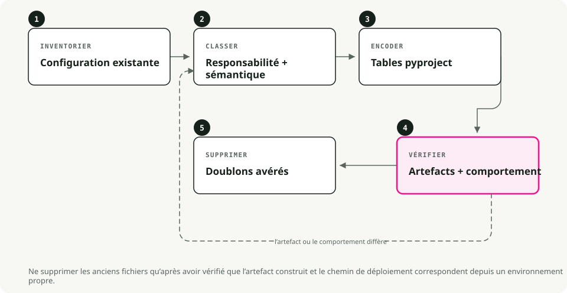

Traduction automatique
Cet article a été traduit automatiquement depuis la version originale en anglais.
Guide de pyproject.toml : packaging Python, dépendances et configuration des outils
Si vous avez déjà ouvert un projet Python en essayant de comprendre où se trouvent réellement les dépendances, les paramètres de build et les configs des outils, vous connaissez le problème. setup.py, setup.cfg, requirements.txt, MANIFEST.in, plus une poignée de dotfiles pour chaque linter et formateur — tous lisent depuis des emplacements différents.
pyproject.toml regroupe l’essentiel dans un seul fichier.
TL;DR
pyproject.toml est en gros l’équivalent de package.json pour Python. Un seul fichier contient les métadonnées du projet, les dépendances et les paramètres des outils. Que vous utilisiez .venv, pyenv ou uv, tout centraliser ici facilite l’installation et la collaboration.
Qu’est-ce que pyproject.toml ?
C’est un fichier de configuration situé à la racine de votre projet Python, écrit en TOML (pensez à des fichiers INI, mais avec une vraie spécification). Deux PEP ont façonné son fonctionnement actuel :
- PEP 518 (2016) a introduit la table
[build-system]afin que les outils de build puissent déclarer leurs exigences de manière standard. - PEP 621 (2020) a ajouté la table
[project]pour les métadonnées principales du package : nom, version, dépendances, ce genre de choses.
Aujourd’hui, la plupart des outils Python (Black, isort, pytest, Ruff, mypy) lisent leur configuration depuis des sections [tool.*] dans ce fichier.

Pourquoi c’est important
Moins de fichiers à suivre
Un projet legacy typique jonglait avec setup.py, setup.cfg, requirements.txt, MANIFEST.in et une collection de dotfiles (.flake8, .coveragerc, etc.). La plupart de ces éléments sont maintenant regroupés au même endroit.
Builds agnostiques au backend
Quand vous exécutez pip install ., pip lit pyproject.toml et installe tous les outils de build dont votre projet a besoin : setuptools, flit, hatchling, au choix. Vous n’êtes plus verrouillé sur setuptools.
Un point unique pour la configuration des outils
Les linters, formateurs, runners de test et vérificateurs de types savent tous qu’ils doivent regarder ici. Votre IDE, votre pipeline CI et vos collègues lisent depuis le même fichier.

Anatomie d’un pyproject.toml
Un fichier typique comporte trois sections principales :
# 1. Build system - tells pip/build how to package your project
[build-system]
requires = ["hatchling"]
build-backend = "hatchling.build"
# 2. Project metadata and dependencies
[project]
name = "awesome-app"
version = "0.1.0"
description = "Short demo of pyproject.toml"
readme = "README.md"
requires-python = ">=3.12"
dependencies = [
"fastapi>=0.111",
"uvicorn[standard]>=0.30",
]
# Expose CLI commands
[project.scripts]
awesome-cli = "awesome_app.cli:main"
# Optional dependencies (e.g., for development)
[project.optional-dependencies]
dev = ["pytest", "ruff", "mypy"]
# 3. Tool configuration
[tool.ruff]
line-length = 100
target-version = "py312"
[tool.pytest.ini_options]
addopts = "-ra -q"
testpaths = ["tests"]
Décomposition
[build-system]
Obligatoire si vous voulez packager ou distribuer votre projet. Indique à pip et aux outils de build (comme python -m build) quel backend utiliser.
[project]
Les métadonnées de votre package. C’est ici que vivent les dépendances au lieu de requirements.txt.
dependencies: les dépendances d’exécution de votre package.optional-dependencies: des groupes de dépendances supplémentaires (dev,test,docs).scripts: crée des commandes exécutables. Dans l’exemple ci-dessus, installer le package vous donne une commandeawesome-cliqui exécute la fonctionmaindansawesome_app/cli.py.
[tool.*]
Configuration pour n’importe quel outil qui la prend en charge. Chaque outil a son propre namespace : [tool.pytest.ini_options], [tool.mypy], [tool.ruff], et les autres.
Est-ce que cela remplace requirements.txt ?
Pour les workflows modernes, oui. Des outils comme Poetry, PDM, Hatch et uv stockent les dépendances directement dans la section [project] et génèrent des lockfiles pour la reproductibilité.
Vous aurez probablement encore besoin de requirements.txt si :
- Vous travaillez avec un système de déploiement legacy qui l’attend.
- Vous avez un script CI qui n’a pas encore été mis à jour.
La plupart des outils modernes peuvent en exporter un à partir de votre pyproject.toml si nécessaire :
uv export > requirements.txt
Choisir un backend de build
Le backend de build est l’une des décisions les plus déroutantes. Voici une comparaison rapide :
| Backend | Idéal pour | Avantages | Inconvénients |
|---|---|---|---|
| Hatchling | Standard moderne | Rapide, extensible, prend en charge des plugins | Plus récent, moins de support legacy |
| Flit | Packages simples | Extrêmement simple, zéro configuration | Pas adapté aux builds complexes (extensions C) |
| Setuptools | Legacy, complexe | Prend tout en charge (extensions C, etc.) | Plus lent, davantage de configuration |
| Poetry | Utilisateurs de Poetry | Intégré à l’écosystème Poetry | Verrouillé au workflow Poetry |
Pour les nouveaux projets Python purs, Hatchling est un choix par défaut raisonnable. C’est ce que uv init écrit pour vous.
Migrer un projet existant
Si vous avez un projet Python legacy, voici comment le moderniser :

- Ajoutez
[build-system]. Si vous ne savez pas quel backend utiliser, commencez parrequires = ["setuptools>=61", "wheel"]. - Déplacez les métadonnées dans
[project]. Transférez le nom, la version et les dépendances depuissetup.pyousetup.cfg. - Convertissez les dépendances de développement. Placez-les dans
[project.optional-dependencies].dev. - Configurez les outils. Ajoutez des sections
[tool.*]pour Black, pytest, mypy, etc. - Décidez quoi faire de
requirements.txt. Soit vous le supprimez, soit vous le générez à partir de votre lockfile pour les systèmes legacy qui en ont besoin.
Après la migration, vous pouvez généralement supprimer setup.py, setup.cfg et la plupart de ces dotfiles de configuration.
Quelques fonctionnalités utiles
Points d’entrée CLI
Au lieu de l’ancien bloc console_scripts dans setup.py, utilisez [project.scripts] :
[project.scripts]
my-tool = "my_package.main:run"
Quand quelqu’un installe votre package, il peut taper my-tool dans son terminal.
Workspaces (monorepos)
Des outils comme uv et hatch prennent en charge les workspaces, qui permettent de gérer plusieurs packages dans un même dépôt :
[tool.uv.workspace]
members = ["packages/*"]
Vous pouvez développer plusieurs packages interdépendants et tous les installer dans un seul environnement virtuel pour les tests.
Workflows typiques avec uv
Démarrer un nouveau projet
uv init my_app # creates folder with pyproject.toml and .venv
cd my_app
uv add requests fastapi # adds to [project.dependencies] and installs
uv run pytest # runs tests in the venv
Exécuter des scripts
Vous pouvez soit définir des scripts dans pyproject.toml (avec un task runner comme poe ou hatch), soit simplement appeler uv run :
uv run python main.py
Conseils pratiques
- N’épinglez pas des versions exactes dans des bibliothèques. Utilisez des plages comme
requests>=2.30pour éviter que votre bibliothèque n’entre en conflit avec ce qui est déjà installé dans l’environnement de quelqu’un. - En revanche, épinglez les versions dans les applications. Utilisez un lockfile (
uv.lock,poetry.lock) pour des builds reproductibles. - Regroupez les dépendances de développement. Gardez les dépendances de test, de linting et de documentation dans des groupes optionnels séparés (
dev,test,docs). - N’empilez pas toutes les options dans
pyproject.toml. Limitez-vous aux valeurs par défaut à l’échelle du projet et laissez les fichiers de configuration spécifiques aux outils gérer le reste si cela devient désordonné.
Le vrai gain de pyproject.toml, c’est surtout la suppression de petites frictions quotidiennes. Vous arrêtez de chercher quel fichier pilote le build. La config du linter est à côté des dépendances. Pip et votre IDE finissent enfin par s’accorder sur ce qui est installé. Choisissez un backend de build, mettez vos dépendances dans [project] et laissez vos outils tout lire depuis un seul endroit. Si vous partez de zéro, uv init vous amène déjà très loin avec une seule commande.